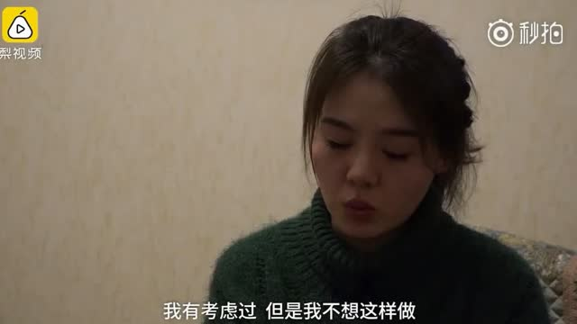

嗯。老百姓挣的多了利好水电。为什么，因为有钱会买好的音响和耳机。各位有所不知，水电站发的电，听起来虽然声底偏冷，但解析度高，声音通透。据说中国最好的水电是三峡发的电，用三峡发的电听音乐，可以说是一种人生享受，尤其是女声。火电不行，听起来有煤烟味。@挖龙脉的超级鹿鼎公:虽然回撤不少，不过心情挺好，想通一件事情，中国劳动力市场供应大幅减少的时候，人力资本肯定会大幅度上升，北京的低端事件是冰山一角，而水电肯定是其中的获益者之一，当然最获利的应该是机器人行业。医药虽然好，可是医保没钱的话，估计医药好不到那里去，所以不懂就不懂吧，毕竟年级大了，学习能力退步了
今天有个朋友，跟我说，你太能躲了。吃鸡游戏一共才杀了14个人，然而有50%多的场次进前十了（每场一百多人参战）。是的，我看了看，基本上一半时间我会想尽办法扛到前4、5名。最后圈子太小，手残，杀不死别人，很少拿第一。但我一半时间都会是前五，战胜95%的人。想了想，这跟咱们“即使全市场都要死，我们也要最后一批倒下”是一脉相承的。只要不死，只要扛到最后，就有可能获得最终的胜利。何况，只要战胜95%的人，就已经很不错了啊。
获利盘还剩19%了。越牛的股票，有时候杀人越猛。不要追短线涨幅过猛的，大多数情况是有效的建议。//@ETF拯救世界:京东方的获利盘只剩27%了。。高位，大换手，杀人利器。@ETF拯救世界:跌了两天而已，涨了几个月的大牛股五粮液的获利筹码只剩70%了。30%已经被套。追涨，为什么要追涨。我真的不懂。
回复@年轻的小飞侠:几乎没见过这种情况。一般来说也就是利润增加多一点，少一点的区别。如果大部分公司利润都下降，那中国经济就已经出大问题了。何况你说的，“大幅”。//@年轻的小飞侠:E大有个问题一直想问,如果下个季报出来后,市场业绩差,PE反弹,大幅提高,怎么办?@ETF拯救世界:距离月末还有11天，9个交易日。到时候能买1份还是10份，港真，要看命。不过，坚持正确的路，运气总不会差。
还有2个交易日，顶住。。。//@ETF拯救世界:忍不住奶一口。还有四个交易日。@ETF拯救世界:距离月末还有11天，9个交易日。到时候能买1份还是10份，港真，要看命。不过，坚持正确的路，运气总不会差。
回复@安妮的花圃:其实你可以好好想想，这四点是不是有关联性。可以说是相辅相成的，都弄明白了，一套比较完善的体系就呼之欲出了。@ETF拯救世界:没事，别担心，过两天就好了。不会耽误发车的~~~接近六万人关注，保不齐有一两个脑子有问题的。。祝他平安快乐吧。。。
回复@tobyli11:我对未来不判断。不过如果大盘股每天这样跌，那真有可能未来继续涨。谁性价比高我就喜欢谁~@ETF拯救世界:跌了两天而已，涨了几个月的大牛股五粮液的获利筹码只剩70%了。30%已经被套。追涨，为什么要追涨。我真的不懂。
每天补，钱不够。这几天有没有一点体会了。我的很多东西，你第一次看可能会毫无感觉。有了经验以后再回头看，才能看懂我在说什么~//@ETF拯救世界:回复@万里浮云无股也呻吟:因为你每天这样补，钱真的会不够。不信可以试试~//@万里浮云无股也呻吟:发车为什么总是要到月底？@ETF拯救世界:根据历史经验看，杀估值的下半场会特别惨烈。当然，现在情况特殊，历史经验还管用不管用就不知道喽。继续维持债券先于股市几个月见底的观点不变。
回复@DX3906-2023:放弃预测，根据概率下注。这是在赌场长赢的唯一选择。//@DX3906-2023:风格切换了，快点买入创业板指数啦，哈哈哈哈@ETF拯救世界:中证500跌幅只有300的10%。创业板还涨了。
懂的讲讲，保险公司第三者为什么不赔。这种情况保一百万三者够不够//@饭统戴老板://@张-帆上海: 你爸那只是一条命，我这房可是我二十多年的梦啊！//@八哥专用:想起老赖的嘴脸，就知道这眼泪完全不值得同情//@绿油油的蓝：你爸那只是一条命，我这房可是我二十多年的梦啊！@我的厕所读物:唐山黄淑芬的女儿接受采访了，目前黄淑芬被拘留，女儿采访时哭着说：车是车祸以后买的，房贷每个月6000多，我们一直积极的在给他筹钱，我觉得我们家比一般人家还要穷一点。其实她的眼泪很难让人同情，车祸发生两年，一句道歉都没有，别人生命垂危，她家只给了1000块钱，冷漠且自私我的厕所读物的秒拍视频  591万次播放 06:29
记住一件事。一个品种跌得越厉害，说这个品种“再也没有希望，再也涨不起来”的人越多。这是当然了，不是越来越多人看跌，它也不会跌这么多。但你自己心里要有一个标杆。不要听别人的。你真觉得那些涨时看好跌时看跌的人赚了多少钱吗。别人都不看好，你就应该好好研究这个品种了。你以为什么叫逆向投资？当然，节奏要把握好。因为下跌的品种通常杀伤力很大。另外，也要有识别的能力。我这里说的是大类资产，单个股票之类的不在讨论范围内。